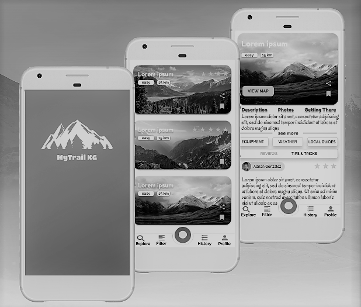
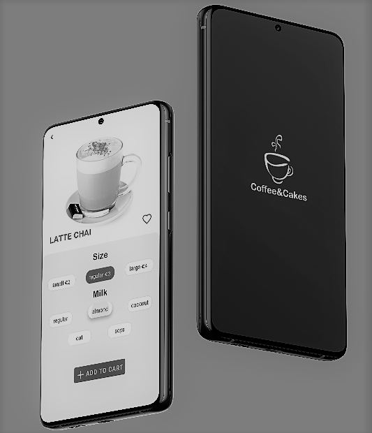
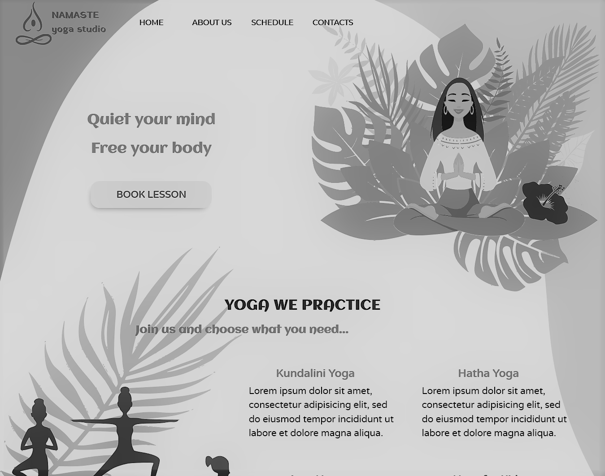

Olga
Bibikova
Hello! My name is Olga, I am a novice UX/UI designer. I've been doing design for a little more than a year. Within this time I completed several end-to-end UX/UI design projects, some of which you can see in this portfolio. I strongly believe in user-centered design approach and I follow it in my projects as closely as possible. From my perspective a great design is a succesfull balance of aesthetics and functionality so this makes user's interaction with the product really enjoyable.



